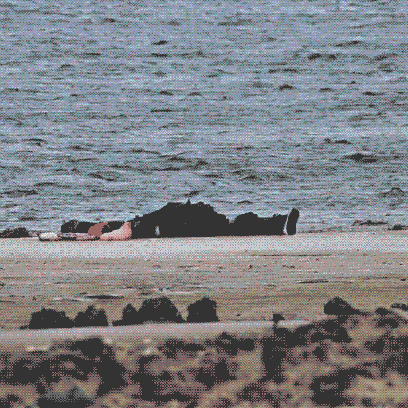
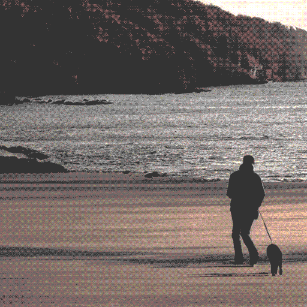
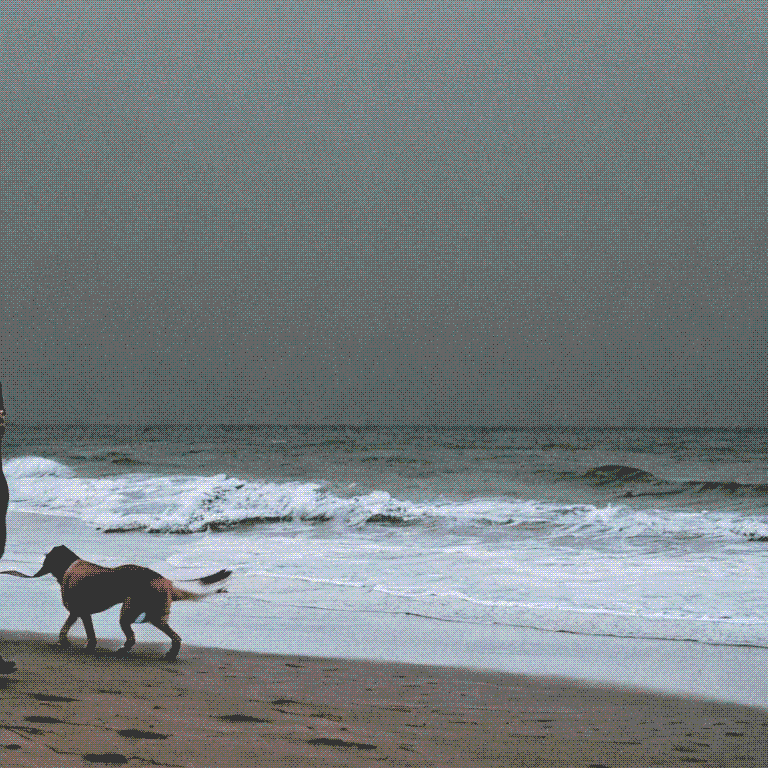
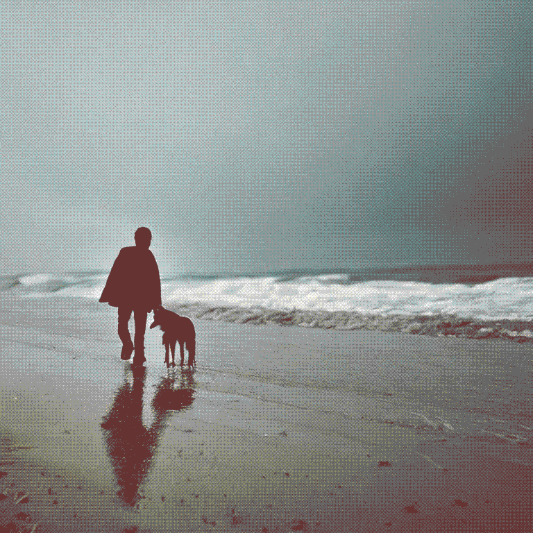

It’s autumn and it’s cold. Dean’s dog is wearing a jacket. Ocean morning glory for two. Not a lot of people on the beach at this time of the day, except for a couple on a bench hugging. Honeymoon period, Dean thought as he passed by them.
“Yo mate!” the boyfriend yelled.
Dean turned around and gave them an eyebrow raise with a quiet: ”Hey.”
“Come here mate, we need a favour” the boyfriend said while making inviting gestures. The girl kept quiet and just shifted her gaze from Dean to her boyfriend and other way around. Red eyes. Were they crying or smoking, Dean wondered.
“I’m Gregory and this is Jenny.” The guy offered his hand with an awkward grin on his face.
“I’m Dean, nice to meet you.” Dean replied as he was shaking their sweaty hands. They must be anxious as I am, Dean thought.
“We just need for you to take our picture darling.” Janny spoke finally.
“Sure” Dean replied. Gregory was going through his backpack and pulled out a digital camera.
“This is your weapon soldier!” He gave it to Dean.
Dean was studying the camera when Gregory cut him off. “Just press gently and hold this button until it makes the sound and then click all the way.”
“Yeah I know… I just” Dean was mumbling. The couple stood up and went towards the water. Gregory hugged Jenny and asked her: “Is this a good spot?”
“Perfect” Said Jenny, eyes watery.
“Wait!” Gregory yelled and ran towards Dean. He took the camera and put it on filming. “Better take a video” Gregory whispered into Dean's ear and winked at him as he was backing off to his initial pose.
Whatever, thought Dean.
“Ok, go!” Gregory said as he hugged Jenny tighter and put on a wide smile. Dean pressed the button. There was a bit of stillness before Gregory put his hand behind his back. Dean was looking through the lens and it appeared as Gregory pulled something from his back pocket.
A Gun. Through the lans Dean saw Gregory shot Jenny in the head and right after he put the gun into his mouth and blew his own brains out. It took exactly 2 full seconds for Dean to drop the camera after Gregory shot himself. Duke was barking. Dean was paralysed.

Chapter 2. Questions
Dean pulled his phone and dialed 911 immediately. “Hello, I just witnessed a murder and a suicide. I’m on the beach. Right after the Camden Yacht Club. ” Dean waited the longest 6 minutes in his life.
“What do you know about the couple?” The officer was asking the same question for the 4th time now.
Sam J. Dunn, an officer from homicide with 30 years of experience in the department. Sam was pretty expressionless, but still gave some weird vibes to Dean.
“I don’t know anything about them. I’ve already told you, I just met them and was doing them a favour. They just asked me to record them and I did it.”
“Didn’t you find it strange they asked you to record them and not just take a picture?” Asked Sam with his monotone voice.
“Yeah, I did. But what should I have done, they asked me for it and I just did it. It was actually the guy that suggested for me to record, the girl didn’t even know. She was thinking I’ll just take a photo. But I just thought he will play some prank on her for more views on their vlog or something.”
“Alright. So you are positive you just met them now right?”
“Yes.”
“OK. Do you know what else might be on the camera?”
“No, what?”
“Here have a look.” Sam pulled a yellow envelope under his desk and pushed it to Dean.



“Oh shit!” Said Dean gasping. There was around a dozen photos of him walking the dog on the beach. They seemed to be taken in the last month or so, judging from his clothes and the weather.
“You weren’t aware of these photos being taken?” Sam asked.
“No, I didn’t know I was stalked.” Said Dean while going through the photos.
“Alright, and what do you think about this?” Sam pulled a zip bag with a piece of paper inside. The paper had a bit of blood on it. Dean took the zip bag and froze when he saw it.
“Message to Mr. Dean: Listen to the Gray Knight.” Was written on it.
“It is written by the girl,” Sam continued as he closely watched Dean’s reaction. ”We confirmed her hand-writing. Does the name Janny Willberg ring a bell?”
“No it doesn’t.” Dean was getting more nervous. “They have planned this! Where did they get my name! Why did they do this to me?!”
“Does the “Gray Knight” mean something to you?”
“No it doesn’t,” Dean was upset and shaking by this point. After a pause he continued. “Wait, am I suspect?”
“No. For now you are just a “person of interest”, you are not a suspect. You are free to go home but we will be contacting you again. Keep the phone close if we need to call you. I wouldn’t be worried about this, go home and get some rest. If you remember anything else don’t hesitate to call. Thank you.”
Illustration: Photo of The note: Listen to the "Gray_Knight". In the forum.
Sam was on his desk looking through the evidence. Jane, his colleague, entered his office. ”We have the boyfriend identity. His name is Gregory Collins. He is from a Belfast up north, as Jenny. They were really a couple,” Jane was talking while Sam was staring at the photos. “We have statements from the parents of the two. They are obviously shaken up by this whole thing. They said Gregory and Jenny never fought, or had major problems. Background check showed Gregory does not have any history of violence or mental illness. No criminal record whatsoever, both are clean. Highschool sweethearts.”
“I’m mostly confused about Dean.” Sam continued while still watching the photographs. “ They targeted him for this. And it seems like the girl was onto it. It’s clearly her handwriting on the note.”
“Yeah,” Jane agreed. “And you might find this interesting. They found a usb flashdrive with a key from a bitcoin vault in Janny’s room with a note saying: “To my sister Erin,” Erin is twelve and nobody has idea where could Janny get so much money. It’s estimated around 420000$ in bitcoins. Also we found 4.2 grams of marijuana.”
“Hmmm,” Sam finally made eye contact with Jane. “so Janny was involved with drugs. Let’s see how the autopsy goes.”
“Maybe,” Said Jane while moving out of the office, she paused for a second and turned around “We are heading for lunch, you coming?”
“Nah, I had something earlier.” Said Sam and returned to the pile with evidence.
Illustration04: Email screen from edible@fsx.onion to dean_prince29@yahoo.com
Email content:
A young Rabbit hopped around,
When he saw two roses wither.
Burden by his dad,
to play the game he had.
If the Rabbit doesn’t play,
the poor thing will die in pain.
The Gray Knight.
Chapter 3. Coincidences
“Hello Sam,” Dean called Sam immediately after receiving the mail. Nobody else knew about the Gray Knight, it must be legit. “It’s Dean. I have some...hm, news?”
“Yes, hello Dean. What kind of news?”
“I have received an email.”
“Email? From who?”
“I don’t know, but it’s signed as the Gray Knight.”
“Hmmm,” Sam paused and took his time to think for a bit. “OK, would you mind coming to the station to give a statement? You will be able to log in the mail service from here to show us the mail.”
“Sure. But… Sam... I’m scared Sam!”
“Listen, you shouldn’t be worried, I’ll set up some security outside your house at night. Just come here and we will talk.”
“OK.” Dean hung up and started to get ready.
“Take a seat Dean,” Sam welcomed Dean to his office. “Here’s a laptop for you, can you log in to your mail service please?”
“Sure.” Dean replied as he was typing his mail and password.
“Hm. The mail is encrypted. I’ll send it through our IT specialists, but I doubt they will be able to trace it.” Said Sam.
“Am I the rabbit Sam?!” Dean was breathing heavier now. “Am I going to die?”
“Calm down Dean. Nobody is going to die.”
“But there, it says: “The rabbit will die in pain!”
“Let me ask you something Dean.” Sam pulled his chair out and took a seat opposite of Dean. “Have you ever had some contact with narcotics? You don’t need to lie to me if you used yourself, this is a homicide investigation and I’m asking you for your own safety.”
“Well, I have smoked pot a lot in the past. But nothing major. That habit died out with my last long relationship.”
“Have you had contact with dealers?” Sam asked. “I advise you to be honest with me on this one, you better protect yourself than some dealer who might know whats going on.”
“I got my weed from highschool friends, I can write down their names but most of them are out of the loop anyways.”
“We found some evidence leading to that inside Janny’s room.”
“What kind of evidence?”
“You can write their names with your statement here,” Sam pulled out a bunch of papers and a pen and hand it to Dean. “After that you are free to go. It was a good call that you’ve contacted me.”
Dean left a short statement, wrote few names and left. Sam was lost in his thoughts. He printed out the poem Dean received and put it on the board. “Who is the gray knight? Did Jenny had some gang on her tail? Does Dean know something and not telling?” Jane knocked on Sam’s door and interrupted his thoughts.
“We have the autopsy results.” She handed the papers to Sam. “Jenny is clean, Gregory is having marijuana traces. No marks or any other clues other than the shot wounds from the shooting.”
“Thank you, Jane.”
Illustration: iphone messages screen:
Emily: I have to tell you something. You have been very cold towards me lately. You have responded to my texts with one word replies. I can understand if you don’t want to be with me, but don’t give me the silent treatment and hold me hostage. I also understand what happened to you must be very stressful but you cannot do this to me! Tell me what you really want and stop being a coward!
Dean: Are you really gonna give me this NOW? After all I’ve gone through?
Emily: Talk to me about it! Don’t cut me out of your life like this. I have been nothing but supportive and you don’t want to even talk to me!
Dean: Emy. I’m sorry but there’s stuff you don’t know about what happened. Come by later and we can talk. I’m not OK with discussing this over chat.
As soon as Dean open the door Emily jumped to hug him. He hugged her back.
“Hey, we have 3 episodes left from season 2 now” Said Dean as he was pouring cider over the glasses with ice cubes. “Yeah I know,” Emily said as she put down her backpack and sat on the couch.
“I’m sure the mother knows something.” Dean continued. “Did you notice the look she gave to the officer when he talked about her son?”
“Yeah, I did.” Emily was clearly not interested in the show they were binge watching.
“I have a theory though. It’s far fetched but I think the mother is having an affair and the murders are done by her lover.” Said Dean.
“Maybe,” Said Emily as she lost her focus in the distance thinking before she snapped out of it and continued. “I want to talk about us. I’ve been feeling very isolated lately. Even before what happened to you. I really think you should be more open to me if you want this to go somewhere.”
“You don’t know what happened, Emily! I think it’s not over and maybe for the first time in my life, I’m really scared.”
“Tell me then! Tell me what happened!”
“They had my photos on that camera. The camera I was recording them with. They had my pictures on it from the past month or so. Every morning I was walking my dog they were stalking me. They didn’t just pick me up for “the favour” They planned and targeted me.” Dean was explaining while Emily listened in shock. “Also I got this creepy email. It’s connected to the murder.”
“What email?”
“It had a short poem written. But it was signed as gray knight. The same name which was written in the note the girl wrote for me before the murder.”
“Wait, what knight,” Emily jumped from her seat. “What did you say?!”
“I said, it was signed as the gray knight.”
“What was the poem, tell me!”
“Here see it for yourself” Dean opened his laptop and showed Emily the email. She started shaking as she was reading.
“We have to go there. I have to show you.” Emily was pacing back and forth. “You have to see this.”
“See what Emily?”
“We are going in the jazz bar. Let’s take your car.”
Illustration: Car drive. Side view and back seat POV exchange. “Pastorius” neon sign in the background.
“Pastorius” wasn’t your ordinary jazz bar. It had cheap beer which was its main selling point. Not a lot of jazz enthusiasts gathered there. It was more of a cheap place for adolescence where the music was the last thing on everyone's mind.
“Here Dean, come!” Emily was dragging Dean through the bar holding his hand, she was headed to the toilets. “It’s in the girls toilet.”
They got in quickly. On the back of the door of one of the toilets there was a sign with big red letters.
It said: “follow me if you want to play - gray knight”
Illustration:
EVICIDE forum. Chat in right corner:
whalesAlwaysWin: afk?
"Gray_Knight": I’m here.
whalesAlwaysWin: The initiation will start soon. You will need to push some more dread, It might get heavy, having doubts?
"Gray_Knight": you know im all in on this
whalesAlwaysWin: Just checkin
"Gray_Knight": Just give me the sign
whalesAlwaysWin: It will come soon. You just need to do one more thing before the initiation.
"Gray_Knight": kk
Chapter 4. I don’t want to play
write location pastorious
“Can I help you?” The barman was getting ready for his day.
“Coffee. Black. No sugar, no cream,” Sam made his order and sat at the bar. “Do you always open this late?”
“Yeah, young folks don’t get up early.”
“Makes sense. Where are the toilets? ”
“Way back by the pool table. One door, you can’t miss it.”
Sam left his jacket on the chair and went to the toilets. Opened the door of the women's room and immediately saw it. It was conveniently placed in the center of the door about 160cm above ground. “Hm, he is close.” Sam mumbled to himself as he was taking the picture.
“Do you know most of the people that come here?” Sam asked the barman as he was getting back to his seat.
“Well, I know some but not most of them. Young generations change fast, the moment you think you know someone, he is already replaced with younger version of himself. Nobody comes back here after a certain age.”
“Have you noticed someone that jumps from the crowd coming by lately?” Sam asked.
“Hm,” The barman placed the hot coffee on a paper napkin. “Not sure if that counts but there was a lady in her mid 30s that came by the other night. That’s kind of rare here. She was wasted. She was repeating “I don’t want to play, I don’t want to play, I want to quit, why they don’t let me quit.” I stopped serving her as she had too much to drink obviously and she left.”
“Did you got her name?” Sam was writing in his little notepad.
“Nah. Sorry.”
“No problem. What did she look like?”
“Short blond hair, just right under the ears. Wearing a black dress with some colorful flower pattern I think, and maybe she was carrying a small brown leather bag.”
“OK,” Sam was getting it all in the notepad. “You got something else for me?”
“Nothing out of the ordinary I’m afraid.”
“OK, thanks for the coffee and your help.” Sam left bunch of bills and left.
Illustration: Girl Toilet door. Some tags and toilet messages scattered on the door. Neon light blinking. In the middle “follow me if you want to play - gray knight”
Intertwined between the sheets Emily started talking while Dean was breathing heavily. “Do you think we can ever get the way we were?” Emily asked as she was staring at the ceiling. She was feeling guilty about feeling good. All this drama Dean was into made him more vulnerable and she enjoyed that.
“I’m not ready to have this kind of pillow talk right now.” said Dean.
“Do you know that I’ve never seen a falling star.” Emily continued.
“Are you serious?”
“Maybe it’s because I always keep my head down.”
“What are you trying to say?” Dean was getting impatient.
“This is not easy for me too you know!” Emily replied.
“You have to make everything about yourself. Let’s go for a drink.” Dean said as he was putting his pants on.
“Wanna go to the jazz bar? We might get close to our guy.” Emily said with excitement.
“Sure.”
Chapter 5. Recruitment
Dean and Emily got some more moscow mules, they wanted to let some steam out. They made some small talk with a couple of friends they know but after a while they went on the small patio in the back to talk.
“This whole thing seem so surreal.” Emily started the conversation about the recent events.
“Yeah, I wonder what will happen. I feel very anxious about the whole thing. The uncertainty of the situation is making me nervous. I thought this thing is over, but apparently is not. ”
“Look at that kid, he is so drunk.” Emily interrupted Dean pointing in the direction of a kid who walked like he had too much to drink.
The kid was heading to the patio, before he had a chance to say anything he threw up in front of them. He mumbled something about the Latter Day Saints.
“Is he ok?” Emily broke the silence.
“Yo, do you need some help?” Dean acted immediately.
“Dude… I’m just… my mom man.. fucking mormons.” The kid tried to make a sentence.
“It’s OK. Come sit with us.” Emily invited the kid while making a cringing face to Dean.
“Are you from around boy? Can’t remember seeing you around.” Asked Dean.
“Yeah well, not really. I’m on vacation, I have some relatives here. Do you maybe have a napkin or something.“ The kid said as he was looking at Emily’s purse.
“Sure, here have some water too.” Emily pulled out paper napkins and a bottle of water and gave it to the kid.
“I’m sorry. My name is Simon. I come from a town in the west. Around 300km from here. No offence but I don’t like it much here. My mother is raising me alone and she is a mormon. She sends me here because my aunt is a mormon too. I fucking hate them all.”
“How old are you? Aren’t you supposed to be at school during this period of the year?” Dean asked the kid.
“I’m homeschooled. Basically I live in hell.” Simon replied sipping his water. He put down his backpack and pulled a slim new-generation laptop from it.
“Wow, nice machine. Your not doing so bad after all.” Said Dean with smug tone in his voice. In his head he painted a bratty kid who is taking things for granted.
“I both my own laptop. My family didn’t give me shit.” Simon replied.
“OK, if you say so. I wonder how can a kid your age make such money but whatever.”
“Dude. You will not last a day with that attitude.” Simon replied with a grin on his face.
“What?! What the hell you are talking about.” Dean raised his tone.
“Nevermind homie. Come let me show you this.” Simon got closer to Dean and opened TOR browser.
“Hahaha, you think browsing the deep web is making you tough little boy?” Asked Dean arrogantly.
“Not at all. I stay away from it mostly. But this thing is very interesting. It’s a forum called Evacide. It’s basically an ARG. Do you know what ARG is?”
“Enlighten me.”
“Well, the abbreviation stands for Alternate reality games. It’s basically a real time game that expands on multiple platforms as blogs, video channels, real world places and events. Everything goes basically and the game is formed as it is played. It can be influenced by the players so it can change turns. It’s usually very boring, but from time to time there are jewels like this.” Simon started to gain his composure.
“OK, dude. I will like to be left alone with my girlfriend right now before I get angry. You seem fine now, off you go.” Dean was suspicious as Simon was wasted only moments ago and now he seemed like he didn’t drink at all. He found his rambling about nerdy online games off putting.
“Yeah yeah, I’m going. I just need to show you something that I’m sure you will find interesting. Here have a look.” Simon tilted the laptop to Dean. Dean was in shock. On the screen there were the same photos of Jannies camera of him walking the dog. There was only 3 photos.
Illustration: Evacide forum. 3 photos in an empty thread posted by gray knight.
“What the fuck is this?! Where did you find this?” Dean was upset and grabbed Simon by the shoulder.
“You better not lie, this is serious business. There is a murder and police involved,” Emily treatend Simon and pulled the laptop from him onto her lap. “Dean, see who posted the photos.” She pointed out to "Gray_Knight" username.
“Fuck. What is this website? How did you find this?” Dean was grabbed Simon by the shoulder.
“Chill dude damn. I know nothing about any murder. I got the link for the forum from an online buddy on 4chan. It’s an ARG game I’ve told you. I have one more invite if you want me to send you.”
“Sam, it’s Dean. You should come. There’s this kid with a website on which my photos are being posted. Yeah will we wait for you outside,” Dean put his phone in the pocket and grabbed Simon by the arm. “You are coming with me.”
“Fuck dude. Where are we going?”
“To the police.”
Illustration: Evacide level 01 sign on top of the page. Some different treads with puzzles and tasks in the window. Chat in the right corner.
"Gray_Knight": You ready for your next task?
Forest_Welder69: If it pays as the last one.
"Gray_Knight": Even better.
Forest_Welder69: OK, what I need to do?
"Gray_Knight": You need to find the guy from the photos and show them to him. Also you need to get his mail and send him this link. It’s an invite for level 1 Evacide.
Forest_Welder69: Where can I find him?
"Gray_Knight": You said you will be whole month at your aunt. You should be able to find him at the jazz bar. Hang around the bar and he will come. If you don’t find him I’ll contact you again.
Forest_Welder69: ok. When will I get the coins?
"Gray_Knight": Half now and half when you get the job done.
Forest_Welder69: ok
"Gray_Knight": Don’t talk about our deal. Just show him the photos and the invite. If things go south keep your mouth shut and just say you got an invite, you saw the photos and when you saw him you thought he needed to see them.
Forest_Welder69: KK.
“Simon, I want to tell you that this is not a joke. You are involved in a murder investigation and you better tell me everything you know. Let’s start with the forum. Tell me everything you know about it.” Sam was interrogating Simon while Dean and Emily waited outside on the bench.
“I got the link from an online buddy from 4 chan couple of months ago. On the link there was only a window to create an account. You choose a user name and a password, pretty basic stuff. I made an account because I was curious.”
“What's the name of your friend who give you the account?”
“Her nick is I_live_for_your_moms_cock. I don’t know him in person. I met him on 4chan.”
“How do you know it’s a him?”
“I’m not sure, but that filthy mouth made me think...”
“What happens on the forum?”
“It’s an ARG game. Mostly we solve puzzles and do tasks, some of them are online and some of them are real world puzzles. We were told that this is only level 1, and if you are worthy you can level up.”
“What kind of puzzles and what kind of tasks?”
“Well, the latest one was to find Dean and show him the forum. I needed to recruit him for the game. I didn’t know anything about the murder he witnessed. I just thought I needed to recruit him or that he knows about it and it’s some kind of test.”
“You mentioned that you cannot invite anyone you want. You only have one invite link.”
“Yes, I already gave it to Dean.”
“Yeah and he gave it to me. From what I can see there’s nothing here, just the photos and other dead threads. I will confiscate your account and use the one meanted for Dean also. We will keep in contact for the time being. Trust me boy, this is bigger than you think and you might be in danger. So you better tell me everything and cooperate.”
“Yes sir.”
“Don’t log in anymore, I’ll manage the account and work from there. You stay at your aunt and call me when you plan to leave! I need to know everything you’ve done and said there.”
“I have a bitcoin account. They paid me for the tasks. Nothing illegal. They made me send few letters with poems and mail them to different addresses and now this. They promised to pay me double.”
“How much did you got for the letters?”
“1400$ in Bitcoin. They promised me 3200$ if I find Dean and give him the link.”
Commissioner Michael was younger than Sam. He didn’t hold much of an authority to Sam. Michael didn’t like Sam but knew the old wolf was the only competent cop under his belt so he didn’t have much choice.
“You are fucking insane!” Sam stormed the office of commissioner Michael.
“Watch your mouth Sam.”
“You cannot close this case, it is way bigger than we thought, I finally have this lead and you are shutting me down? Fuck you!”
“You are way over the line Sam, do you want to go on vacation for the season? You have a dead body without a lead and you are obsessed with online game blogs. Fuck you!”
“That is a dead whore and I’m onto something bigger and you know it. You can put David on the whore or whoever you want, just don’t mess this for me.” Said Sam.
“David is too slow and I have pressure on this case. We need to solve this fast as we have a tourist season and we cannot afford to mess around, the pressure is coming from the mayor's office. Also, the slut is a client of the big guy and he is personally interested in solving the case,” Michael made an apologetic face and shrugged his shoulders. “I shouldn’t remind you to be discreet about this.”
“Just don’t wrap this up yet. I’ll take them both.”
“As you wish Sam, but don’t lose your mind over this.”
Chapter 6. Evacide
Illustration: Sam is logging on the blog with Deans account. He is at tire 01.
Blog conversation #1:
"Gray_Knight": Hello
V1n(ent: Yo
"Gray_Knight": You probably wonder what is going on?
V1n(ent: I’m hoping you will tell me.
"Gray_Knight": I’m going to tell you all about it, officer.
Jane knocked to Sam’s office but didn’t wait for his response and entered. Sam didn’t get his head up from the laptop. “Here are the additionals for Ms. Blondy. Looks like she was a close to more than just the mayor. She had connections to few more people in that circle.” Said Jane and put down the papers on the desk.
“Party members?” Sam asked without moving his eyes from the screen.
“No. Members from the baptist community church. Isn’t ironic?”
“Mmm...maybe.” Sam giggled while he was typing frantically on the laptop.
V1n(ent: I’m listening.
"Gray_Knight": On the stone that remains
Carved next to his name
His epitaph plain
Only a pawn in their game.
V1n(ent: Socrates?
"Gray_Knight": Dylan
V1n(ent: who are you?
"Gray_Knight": I’m just a pawn like you.
V1n(ent: what is your name?
"Gray_Knight": That's not important.
V1n(ent: What is important?
"Gray_Knight" “link0124309218501-.onion” watch this link in (timer 00.00.01)
Link: Vlogger commits suicide on live stream.
“So nice for you to join us.” Jane slightly stood up greeting Sam to the table.
“Yeah, nice breeze out here.” Said Sam and greeted both Jane and Marice with a handshake.
“Jane told me about the dark web case.” Marice said while chewing on the croissant.
“Yeah?” Sam asked.
“Yeah. Hanging around kids games websites sounds fun.”
“There’s another murder… I mean body,” Sam was searching for words. “It’s actually another suicide invloved.”
“Who is the victim,” Marice chuckled. “I mean the suspect.” Both Jane and Marice burst in a short laughter before Jane saw Sam’s face going red. Uncomfortably they put their heads down and returned to their lunch.
“It’s an Japanese vlogger. Sonoda Yumia. She killed herself while live streaming on Wellnote (http://wellnote.jp/). It’s a Japanese family social network. She cited a Bob Dylan song and then electrocuted herself in a bathtub. Evacide blog had the information before she commit the suicide.”
“Any traces on Evacide?” Marice was more serious now.
“Nothing much. They run anonymously. But unlike most of criminal websites on dark web they don’t have centralized management. ”
Chapter 7. Endrice
2001 N.Macedonia
“Let me show you something else then,” Said Eva, sitting on the bench in their yard and typing on the laptop. “I can’t believe I did this. This girl actually showed her face. Hahaha!” Eva turned the laptop and adjusted the lid so her sister can see.
“They are big.” Said Endrice.
Both with the hijab on and green eyes, the twin sisters looked like unpacked barbie dolls.
“They are beautiful. I want to have big boobs when I grow up.” Said Eva.
“We will either both have it or not.” Endrice pushed her breasts the way a push up bra does it.
“True that haha,” Said Eva while typing on the laptop. “She is such a whore. I want to embarrass her.”
“I want to do more things to her.” Endrice said while glancing at the photo Eva was pointing at.
“If we play this right, we can do anything with her.”
Original timeline:
Illustration:
NEW CHAT WINDOW:
“Edrice”: Hello
V1n(ent: Hi
“Edrice”: You don’t know me, but I know you. I can explain everything.
V1n(ent: Who are you?
“Edrice”: I’m the sister of the girl who created this forum.
V1n(ent: What exactly is this place?
“Edrice”: It all started as an edgy truth or dare forum. Back then in 1998 the place was filled with mostly sexual stuff. Nudes and dick pics. Sometimes a noughty dare but nothing too extreme.
V1n(ent: Dares like what?
“Edrice”: There was weekly tasks that all people from the vlog voted on. Dares like, flash your boobs in public or have sex with a stranger, those kind of things. For every action you had to have some sort of proof to post on the forum. However, money got involved and things got dark pretty fast. Jailbaiting, homewrecking, bullying, blackmail and extortion. The community was transforming and things escalated quickly. The first suicide happened when a girl wanted to leave the forum. She messed up a dare and wanted out. The community blackmailed her and bullied her into suicide. That was the point of no return.
V1n(ent: What happened after that?
“Edrice”: After the suicide a lot of money came pouring in. The crypto was booming and the place turned into a cult. We started recruiting. The forum turned like those insurance pyramid schemes and become pretty huge in no time. For every recruitment or task you earned points.
Tasty awards, designed especially for you. If you were money hungry you were fed money. If it’s power, that's what you got. You have a fetish you want fulfilled, done. There was nothing off the table. A true secret society of the seven deadly sins. Then, people started dying. They wanted out for whatever reason. Things always go too far. They are being offered a grim way out. As long as you play, you are safe but the moment you want to stop or disagree were things are going, bang! You are being hunted. You have a choice. You can give your life and make your death part of the game, the big picture. The greater good. That’s your way out. If not, bad things will happen to you. Not much of a choice. When you are deep in the game the system has your identity, lot’s of information about you. They know your close friends and family. If they can’t get to you they can get to someone close. If you know ones deepest fears you can make him do anything. When you are hunted, suicide seems like a gift. My own sister died because of them. I want this place shut down, but I will need your help for that.
V1n(ent: How do they recruit people?
“Edrice”: For some the game starts with a favour or a lost forgotten debt. People's own curiosity plays a big role.
V1n(ent: I will need something more tangible than this in order to help you. Do you know anyone's name. Who is in charge?
3v4&3ndr1(3 : There are people that are running the show right now. Dangerous and powerful people. But It’s hard to get to them.
V1n(ent: Hard as impossible?
3v4&3ndr1(3 : Hard as you have to play to get close to them. I’m here long enough to know some of them. These three operate from the highest tier in the game. I’m sending you the info.”
P1: Ahmo Kurjak - Sarajevo, Bosnia. 02.07.’86 EVACIDDE username: ahmL355
Ahmo is a muslim. Plays a lot of games and is addicted to gambling. Very smart but wants to walk on the edge. The game is like the ultimate gambling experience for him. Hazard’s heaven. He doesn’t hesitate to put his life on the line if there is a tasty reward. He is a master poker face though, that’s how he got to the top.
P2: Esther Posse - Sweden. 12,03.‘74 username: Magi223
Esther Posse. The Void. Dread personified. Living hell. Bitch. She is a member of the European Council. Very powerful woman, but she can never get enough. She plays dirty, never believe her anything.
P3: Layton Dorsey - USA. 28.09.‘91 usernameL Gray_Knight
Dorsey is a rich brat. Son of wealthy parents. Untouchable. He acts like he's above it all. I like him the most from all others though, I don’t know why.
From what I know you have already met him. He is your "Gray_Knight".
V1n(ent: Can you give me something so I can bring him in questioning? Can you testify against him in court if we find evidence for conviction?
3v4&3ndr1(3 : Sam. I’m an Egiptian citizen. I can only help you from inside the forum for now. Don’t rush it, if you go deep you will meet him. Even if you catch him right now you will not have anything on him. They don’t operate like that. Every action is a part of a chain, it’s all planned. They work like clockwork. Nobody is fully responsible. You need to have them all to connect the dots and expose them. You will have to win the game.
V1n(ent: Challange accepted.
3v4&3ndr1(3 : Good. Every tier exposes personal information for all the tires below. They have peoples names, credit cards, contact information, real-time locations, social security number, full ids, bank accounts, everything. All hacked and packed for usage from the upper tiers. Your personal life, relatives, friends, close ones. All there on the social network plate.
V1n(ent: Do they have my information?
3v4&3ndr1(3: I’m sure they’ve been working on it.
Chapter 8. Benefits
“I think you will be interested in this!” Sam didn’t even heard Jane walking in his office, he only noticed when she slammed the usb on his desk.
“What is that?” Sam asked.
“Just watch it!” Said Jane smirking.
“OK,” Sam says. ”Let's play it then.”
Illustration: On Sam’s office screen: “REALISED BY GRAY KNIGHT.” Was written with spray paint on the wall. A washing machine drum was installed in the center of the room and was rolling slowly as a dead body attached with a rope to the drum was circling around it. [ 3-D body made with (Fizika na tela shto gledamo na piktoplazmu.).
“Thank you Jane, can you please excuse me.”
“Cannot you just acknowledge my contribution?”
“Not now Jane!” Sam yelled.
“Hm, didn’t guess it was that meaningful.” Said Jane and left the office. Smirking.
3 weeks earlier:
illustration:
"Gray_Knight": So you gonna sit on your ass and ask questions or you gonna get your hands dirty?
V1n(ent: What do you mean?
"Gray_Knight": Are you gonna play?
V1n(ent: Yes, I’m gonna play.
"Gray_Knight": Good. There is a box you need to deliver and install the content. This is an art installation. Do you know your way with tools?
V1n(ent: Sure.
"Gray_Knight": Ok, so if you will get the specifics on this temp link:
hdk639hd728291£.onion
user: freewill
pass: incontrol
V1n(ent: Ok.
"Gray_Knight": If you do this right there's a big reward for you mate. Instructions on the link. Knight out.
V1n(ent: Ok thx, but can I ask a question?
Seen…..
Sam puts the key he got from the safe in the garage.There is a box with a washing machine and a tool box next to it. He puts them down into his pickup, locks the garage and throws the key into a specific dumpster he was told about in the link and goes to the address. When he rang the bell there was a guy in dress waiting for him.
“Hi, you didn't take you too long, bonus points!” Said the fellow smiling. He looked like a jolly drag queen without the makeup.
“Thank you.” Replied Sam.
“I’m Jeremy!” Said the guy in a dress offering a hand shake.
“I guess this is for you. I’m Sam” Said Sam.
“Sure. Set it up in this room.”
“ I will,” Sam was unpacking the box and going through the tool box. “What is this for Jeremy?”
“It’s all part of the game buddy.” Jeremy stopped pacing and looked suspiciously towards Sam.
“What game?” Sam asked.
“The game of life of course,” Jeremy said with a dumbfounded facial expression now. “Just do your thing man.” Jeremy said and left the room.
“It’s all done!” Sam yelled.
“OK, thank you dude. See you on the other side I guess.”
“Yeah. You mentioned a game of life, what is that about?” Asked Sam while wiping the sweat from his forehead with his sleeve.
“OK, now you are freaking me out. Your job is done here, I would like to get out of my house.”
“Tell me what game? What’s the point of the game?” Sam insisted.
“Get out!” Jeremy pushed Sam out of the door way and slammed the door.
Sam tried to pick through the front window. The curtains were too thick but he heard the machine drum motor starting to roll.
Back to original timeline:
“There are 7 cases that I’ve connected so far with the forum,” Sam was pacing inside his directors office. “You have 4 people dying on social media and 3 off camera. All with messages either written or recited before death that are somehow connected to the forum.”
Declan Doyle was his long time supervisor and considered Sam a friend. He is younger than Sam but career driven fellow. Declan hold more respect for Sam than the other way around and it was hard for him to give orders. Sam didn’t make it easy for Declan.
“How many of which are suicide?” Asked Declan.
“All of them.”
“Sam, I respect you. I even like you. Please don’t make this difficult. You have 2 years to pension. I know this sounds like a case, but you said it yourself, we cannot track any of them. I cannot contact the International service without any real leads you know that!”
“You cannot take this from me, This is big!” Sam raised his voice.
“Few more weeks, Sam. I need a suspect, person of interest or some kind of lead at least, with evidence not just 3 random people someone on forum gave it to you!” Declan stood up and came closer to Sam. “ However, I have been ordered to give you 20% raise. That will influence your pension too. I’m not sure how, but you are a lucky bastard.” Declan tapped Sam on the shoulder.
“Who ordered this?” Sam sounded suspicious.
“I’m afraid I cannot say, but it’s way above us. Let’s say they were very happy about your job on the prostitute case.”
“Alright.” Sam exited the directors office.
illustration:
"Gray_Knight": I hope you liked the present. You did a great job.
V1n(ent: What present?
"Gray_Knight": You work hard but sometimes you need to push the right buttons in order to succeed. You push the buttons, we pull the strings and you have your case solved.
V1n(ent: You want to tell me that was your doing?
"Gray_Knight": This is a long journey officer. Don’t get ahead of yourself.
V1n(ent: And how did you manage to do that?
Seen.
“Jane, can I see you for a minute.” Sam called Jane on his way to his office.
“Sure.”
“What’s up?” Jane asked as she came in.
“Do you find it strange that we had such a hard time with the prostitute case until recently? And then, out of nowhere, the case practically solved itself.” Sam asked as he was opening his laptop.
“Sometimes we just get lucky.” Jane shrugged.
“Seems too good to be true though. The suspect came from another town. He confessed to everything and on top of all he brought his own bag with evidence. How often does that happen?”
“Practically never, but doesn’t mean it’s impossible. It was his first murder after all, maybe his conscience got the better of him?” Jane said.
“I doubt it. Seems more that he took the fall for someone else.” Sam said.
“But it was his fingerprints and hair DNA. It was clearly his doing.” Jane said.
“It was his doing, but I think he was instructed to do the exact thing which he has done.” Sam said.
“Who would spend a lifetime of prison for someone else and for what prize?” Jane said.
“That’s what I want to find out. Make an appointment with the prison, I want to see him and question him again.” Sam said.
“I see what I can do.” Said Jane as she exited the office.
Illustration:
Security footage from a cell with a prisoner interview.
Sam walked in the cell. Nicolas Vier, convicted of murder of the prostitute Lucy Owen was sitting in a chair by the desk untied. Vier seemed happy, although it was the first time for him to be in jail. That just threw Sam into confusion.
“Where are you from Nicolas?” Sam asked.
“Moldova.” Nicolas was trying his american accent. He was good at it.
“When and why did you arrive here?” Sam asked.
“I came to America on 19.03 four years ago.”
“How and why did you get here?” Sam asked.
“I came because I was instructed by people to do so.” Nicolas said, “I had my friends, my minions or my masters on occasion pay for the tickets and arrange the visa for me.”
“What were you instructed to do after you came to the United States?” Sam asked.
“I was asked to stay in a hotel.”
“And after that?”
“After that, I asked for a slut.”
“And then?”
“Then they told me I could be free.” Nicolas said.
“Free of what?” Sam asked.
“Free of my desires and in a place I can call home.” Nicolas looked down. “They were right though, I wanted out. I feel free now. I thank them.”
“Why did you kill the slut?” Sam asked.
“Because I wanted to. They fulfilled my dream and I did theirs. I could never buy a high grade slut like that. It was a chance of a lifetime and I took it!” Nicolas said.
“Tell me more about the game?” Sam asked.
“It’s a game chief. Even if I want I couldn’t really explain it. You can say that your desires and your fears are the stakes. Overall I’m alright with it, I got it from the start. It’s all fair game. Anyways, I’m not dead am I?! Unlike most folks that want a way out.” Nicolas said.
“Can you lead me to any of them? I can offer you some deals.” Sam asked.
“ Wishful thinking. If I knew any of those fuckers they would have been long gone.”
“I’ll give you a couple of names and show you some photographs. Tell me if you recognize anyone?” Sam pulled out 3 printed photographs and arranged them on the table. He then put the cards with the names and info under them.
“Nobody rings any bells officer. I’m sorry.”
Sam pulled another photograph. It just said Endrice El Sayed on the bottom of the photo.
“And maybe this one?”
“Damn, that’s Eva. She’s a chick that died a long time ago. Poison I think.”
“What else you know about her?”
“Not much, she was upper tier. When folks climb the ladder you don’t get much from them. You can not reach them, but they can reach you. I just saw the link from her suicide on the newsfeed. That’s for all to see.”
Chapter 9. Simon
Illustration:
Evacide forum. Sam is logging in as Simon. Welcome to tier 2 screen opens. It says:
Welcome to Tier 2 Evacide
Instructions
DataBase
Help
Weekly Challenges
MAIN CHALLENGE
Voting polls
You can scroll through 2 videos of suicides and play it below and one story and of dogs attacking old people.
Challenge tier 02.
Video: *The Return of the Wolf*
THE RETURN OF THE WOLF
Instructions:
Find a stray dog of big size.
Feed them 3.5 kg/8 pounds of raw bloody veal a day.
Spray the meat with 20 grams of sodium bicarbonate.
Spray it with 2-Nonenal solution.
Feed the dogs this diet for 40 days.
Starve the dogs for 4 days.
Release the dogs in town center.
Rinse.
Repeat.
1-2 dog attack rating - 3 bitcoins.
3-5 dog attack rating - 12 bitcoins.
5-12 dog attack rating - Bronze badge
12-24 dog attack rating - Silver badge
24-40 dog attack rating - Gold badge
40+ dog attack rating - key to next Tier.
Vote for best entry.
Comment section:
Fugaru: 2 bronze badges and 24 bitcoins. I can do 6 dogs and I’m gold badge.
Slavmonkdrinktea: If you have gold badge do you need just 1 dog to get next tier?
Ibusku_0227: If you have gold badge you need either bronze or silver badge on this challenge to make next tier. You will get the coins if you manage 1-2 or 3-5 approved entries. In case you don’t have any badge, with 40+ entries you get in the next tier.
Slavmonkdrinktea: What the hell is 2-Nonenal?
Ibusku_0227: 2-Nonenal is an unsaturated aldehyde. The odor molecule released when omega-7 fatty acids dissolve. In short, old people smell.
Chat window.
"Gray_Knight": Simo.
Forest_Welder69: Yes?
"Gray_Knight": Because of the recent development and your exceptional work within the Evacide community you are granted access to the 2nd Tier. Congrats!
Forest_Welder69: Thank you.
"Gray_Knight": As you probably thought here the stakes are a bit higher.
You have received a folder with all personal information on Dean and his active live location. In the database you have all tier 1 members profiles and information. They are at your disposal now.
You need to find Dean and kill him, remember all tier 1 players are at your disposal. Your second option is to kill Sam. But that will be harder option as his database will not be available to you. There can not be 3 accounts between You, Sam and Dean. One of you will have to go. Simon you have the upper hand being tier2.
One of you three has to be dead in the next 12 hours. The hunter tier4 is sent to assure the challenge is completed.
Knight out.
Dean was brought into Sam's office. 2 hours and 14 minutes passed. The police station was busy. The recent murder challange had everyone on their toes.
“Good, sit Dean.” Sam welcomed Dean.
“Simon’s aunt haven’t seen him since yesterday evening.” Jane was reporting to Sam. “Around 8 pm, he said he will go to visit a friend. Hes phone hasn’t been working since this morning.”
They couldn’t reach Simon. Seems like he fled town without calling Sam.
“Try to track his phone location!” Sam said.
“He has no location enabled. His phone is probably off.” Said Jane from the back.
Sam opened his laptop and checked Evacides location. Working like a charm. Hackers from a pyramid dark web cult had better tracking equipment than the state police.
“He is on Interstate 95, 146 miles north of Camden. Heading towards the Canadian border.” Sam said, “They must stop and secure him at the border, issue an order. Simon doesn’t drive. Patrols should check all busses on that road. Find Simon!”
“State order issued to withhold Simon on the United States border.” Said Jane, “Patrols will stop busses.”
Sam was watching the live location from Simons profile in the database.
“What?!” Sam slammed his hand on the table, “They stopped. It’s a gas station.” Pointed on the screen. “Send a patrol down there and find Simon!”
“We have 2 cars in 4 minutes on the spot. More backup coming later.” Jane said.
Inside the bus Simon was sitting on the last seats in the middle so he is visible to the whole corridor of the bus.
“Last stop before the border. In 10 minutes, I’m leaving with or without you.” Yelled the driver from the front. Pulling packs with cigarettes and putting on their jackets, people were leaving the bus.
“Don’t get out.” Said the deep voice of a shadowy figure on his left. Sitting in the left corner of the bus, holding a gun pointed at Simon. In his other hand he was holding Simons phone.
The figure opened the curtain and saw the driver talking to 2 police officers with a dog.
He turned on the phone.
“One move and you are dead.” The shadow said. “What's the pin code?”
“1472.” Simon said.
x x x x
“His phone is on!” Said Jane.
“Everyone silent!” Sam was dialing to Simon.
Toot. Toot.
“Tell the cops to back off and not let anyone in.” The shadow spoke, “The bus is empty now. If I see anyone coming in I will shoot Simon on the spot.” The shadow said and moved the phone to Simon's ear and mouth.
“This is Simon. I have a gun on my head. Sam!” Simon voice was shaky. The shadow pulled the phone to his ear now.
“That’s right Sam. You have exactly one hour to make a decision. If you kill Dean, I will let Simon go. If you kill yourself, I will let Simon go. If you choose to do nothing. I will kill Simon. If I see someone coming in before an hour has passed, Simon is dead. One of you has to go. It’s up to you.”
The station was silent. Everyone listened to the conversation and was looking towards Sam.
“Sam, what are you going to do?!” Dean started to panic.
“Dean shut up!” Sam yelled. “You are safe, don’t worry.”
“Sam, I’m scared.” Simon was talking on the phone.
“Is that your decision Sam?” The shadow spoke. “Should I go on and kill Simon right now. Let’s not waste anyone's time if that is what you decided.”
“No no wait.” Sam said. He pressed the button so the shadow and Simon couldn’t hear him.
“Do we have a clear target?” Sam asked.
“No clear target. Bus lights are off on the back. I repeat no target in sight.” Jane was listening to tactical report.
“We will have to stall.” Sam said and released the button.
“Listen. You don’t have to do this. We will shut down Evacide and expose everyone soon. If you do this you will either get killed or rot in jail. If you give up now I can make you a deal. We will go after them together.”
“Hahahaha!” The shadow laughed, “I’m not afraid of jail, neither of death. Also, you don’t have to press the mute button, I have sound from Deans phone and visual from the surveillance. If you try to turn them off, Simon is dead. It’s so we can confirm if you decide to kill youself. Or Dean. 51 minutes.” There was a tablet screen in front of the Shadow. The left earphone to his ear.
All lights on the bus station went out. Michael came close to Sam. “Just a precaution.” He whispered in Sam’s ear and asked for his gun. Longest 14 seconds. Sam handed his weapon.
“I will like for the chief to have his gun.” The shadow spoke.
“OK, I’m taking my gun back.” Said Sam to the phone and shrugged to the commissioner. There was something comical in Sam’s expression while taking the gun back but nobody saw the humor in it.
“Wouldn’t you agree that we have more time on our hands than we need.” Said the shadow, “And it’s only fair to the party with the least interest of your wellbeing to speed up the process. And I hope you agree all players involved should have an equal chance. Dean will be given a pistol and he will point it in Sam or the time for decision will be lowered from 47 on 3 minutes. Time to decide, 24 seconds.” Tik.Tak.
“Give him a gun.” Sam responded immediately, “Point it on me and don’t worry Dean. Just don’t do anything.” Dean took the gun and pointed it towards Sam. The shadow was watching them above on his tablet screen.
“Good. Now everyone can decide.” The shadow said.
“What are you called on the forum?” Sam asked the shadow.
“I’m the_shadow.” Said the shadow.
“How do you like that people from upper tiers are playing you like a puppet shadow?”
“I’m playing you like a puppet now fool!” The shadow said, “Dean, pull the trigger. It’s the only way you and Simon live. Sam is putting your both lives on the line. Nobody will convict you. Sam was logging on your profiles. Sam plays the game and now he makes you deal with the consequences. It’s Sam’s fault.”
One of the officers pulls a gun and pointed it at Dean. Dean stresses out.
“Are you going to let other people take the fall for you again Sam? Why don’t you be the one who points the gun to Dean.” Said the shadow.
“Put the gun down Barney.” Sam said, “I’m not pointing any guns to anyone.”
“It will be most fair if you pointed that gun on your forehead.” The shadow suggested. He watched Sam pointing a gun on his head over the tablet screen. “Excellent. Now, we can start counting. One minute. Dean you better pull that trigger.”
“It’s alright Dean. Don’t do anything.” Sam said pointing his gun on himself.
Sweating.
Tik.
Tak.
“48 seconds! Go Dean! Go!” The shadow yelled.
Screaming.
Dean was shaking.
45 seconds.
Tik.
Tak.
“You know Sam. You know you messed up.” 37 seconds. “You went too far. You used the accounts of two innocent adolescents, you played the game and you put them in trouble.” 29 seconds. “You should take full responsibility and...” 25 seconds. “shoot yourself.”
Tik.
Tak.
“Stay calm Dean.” Sam said.
“We have thermal vision from roof,” The earpiece Michael placed in Sam’s ear while taking his gun was buzzing with tactical information. “Target is covering the hostage. It’s a risky shot. 70% Responding to one word order.”
16 seconds.
“Simon, I guess they both have decided. It’s you after all.” Said the shadow. Hugging the hostage.
9 seconds.
“Overlapping bodies on thermal. Risk factor high. 56% Responding to word fire.” the earpiece buzzed.
6 seconds.
5!
“Risk factor high. 43% Resp...”
3!
“Fire!”
Chapter 10. The Shadow.
Illustration:
*Picture of Umi Sichinga*
“Umi Sichinga from Malawi. 18 years in the states. 34 years old. No relatives. Has no left leg from the knee down. Albino. Blood type B+. Wears a prosthetic leg. Has traveled through Europe and Africa.” Jane was reporting to Sam.
“Lost his leg in witchcraft ritual at the age of 8.” Sam is reading the Evacide forum, “Saved by Evacide volunteers he comes in the USA as a 16 year old. They call him, the shadow.” Sam shows his comical side by over dramatizing the shadow’s name but again falls in front of a tough crowd. “See where he stayed all this time.”
“The owner of his residential address is Kyle J. Marsh. Wait a second.” Jane was looking through the files. “Yes. Kyle is Samuel J. Dorsey’s brother. Samuel is Layton Dorsey’s father.”
“The gray knight!” Both Sam and Jane exclaimed.
They gave Sam the biggest office in the building. There were 3 beds in the office. Dean and Emily slept on one, Simon on another and Sam on the last one by the door. Jane only came during the working hours.
She had a life, she said.
Security, they said.
On Evacide. Sam, Dean and Simon are stars.
Everything was streamed on the forum tier 2 and above. The surveillance video; the communication between the hostage, the shadow and the police department; Deans phone voice record; everything packed in the database.
Majority of votes went towards Sam, Dean and Simon’s play.
Dean’s account is tier 2 now.
Full with friend requests.
3v4&3ndr1(3 : That was impressive!
V1n(ent: Think so. Why didn’t you tell me Dorsey was capable of sending me revengeful Albino warriors?
3v4&3ndr1(3 : I didn’t know about their plan.
V1n(ent: And what the fuck tier are you in. Why I can’t find you in the database?
3v4&3ndr1(3 : Because we have never talked about it. I’m level 3. One level above syou all. The hunter was from tier 4. I don’t know the Albino. Also I can send you my full profile. Just ask.
V1n(ent: Umi is a special kind. However, we have a connection with him and the gray knight. Send me your profile.
3v4&3ndr1(3 : OK. Sounds good. But watch out for Dorsey, he can be unpredictable.
V1n(ent: I saved Simon didn’t I?
3v4&3ndr1(3 : Yeah you did. ♥
Ding.
Simon gets mail.
3v4&3ndr1(3 : That must be the_shadow account on Simon’s mail. That’s his reward for staying alive.
V1n(ent: Why? And how do you know Simon just got mail?
3v4&3ndr1(3 : I’m tier 3 remember, I have all his data. The shadows challenge was to kill one of you three. That was his chance for tier 5. You’ve managed to stop his plan and kill him. Now his account belongs to you.
V1n(ent: You are saying the top tier guys weren’t mad about their little plan crushing in Maime’s state police hands?
3v4&3ndr1(3 : Um, probably no. On the top, gamble is the main game. Some lost coins on Simon’s head. Some won on the shadow’s. Very few people put coins on your or Deans head. You are rated high on survivability.
V1n(ent: Lucky us.
3v4&3ndr1(3 : Indeed.
Seen. (37 mins pass.)
V1n(ent: Just so you know. I checked your profile from Umi’s tier 4 account. Everything checks out.
3v4&3ndr1(3: I’m just glad that now you trust me.
The shadow’s account.
Simon’s now.
Full of bitcoins, friends and old stories.
Scattered in Sam’s office were now 3 laptops and all accounts active. Notes are taken, data is being analyzed, connections are being made.
“Dorsey sent the shadow on Simon. The shadow was saved and trained by Dorsey’s uncle.” Sam was repeating.
“Can you stop calling him the shadow. His name is Umi!” Jane had enough.
“Arrange for me to have a word with Dorsey’s uncle. Kyle J. Marsh.”
Chapter 10. Dorsey.
“Welcome Sam.” Kyle shook Sam’s hand and welcomed him in his huge house. They sat on huge white wooden chairs on the patio. “It’s nice to have you hear. We are very stressed over the whole situation here. I knew the boy from when he was 16. I would have never guessed that he would do such a horrible thing. And die such a horrible death.”
He is talking too much, Sam thought to himself.
“Do you know why Umi took Simon as a hostage?” Sam asked.
“No! God, no. It was total mindfuck for all of us. I have done so much for that boy, and such a lousy thing to do to repay me. Awful! Ugh!”
He is overacting.
“Who brought Umi in the States?” Sam asked.
“It’s a charity organization we are running with years. Called “Chance Again” It’s runned by my brother, Samuel.” Kyle said.
He is telling the truth.
“Do you know of any unusual activities Umi was involved in?” Sam asked.
“None that I can think of. He was studying to be a lawyer. He was slow, uninterested. But you have to cut him some slack, the boy came with a heavy background.”
Alright.
“Was he close to your nephew?” Sam asked.
“Yes.”
Bingo. Sam thought.
“The boys connected from a young age.” Kyle said “Went skiing together. Layton took him around Europe, Thai, Chaina, South Africa. Everywhere.”
God damn.
“Layton is in Denmark as we speak. He loves to travel. Often took Umi with him. He is so broken about the incident.”
More like broke if he bet against Simon.
“What is he doing in Denmark?” Sam was taking notes.
“You never know for sure with that kid. He is into art a lot. Maybe a performance with his buddies.” Kyle was not sure. “Or… maybe some gallery show maybe. It’s fine art, modern stuff, you and I wouldn't understand” Kyle giggled.
Bullshit.
“Can we guess when he is coming back?” Sam asked.
“Not sure. Maybe if you leave a contact he can call you.” Kyle said.
“Has your nephew mentioned something about a secret community he is part of?” Sam pulled a card from his wallet and placed it on the table.
“No.”
“Does the word Evacide mean anything to you?” Sam was serious.
“No! What’s going on?! Is my nephew in trouble? Did the boys do anything? ” Kyle seemed sincere in his confusion.
“We suspect that Layton is involved in Umi’s incident.” Sam said, “I will like to see Umi’s room.”
“Oh really?” Kyle stood up from his comfy chair, “Umi is here with us a long time. He promised he will stay here till he find a wife. He didn’t have much luck in that department. Too judgmental. As for the incident. Personally, I think it has something to do with drugs. We had two situations when Umi was caught smoking pot. Layton was always against it. He helped Umi immensely on his path to recovery.” Kyle opened the door and pointed up the stairs, “Come with me.”
Up the stairs, third door on the right.
One bed, big mirror. Closet, window, chair. Illustrated books about airplanes. Weapons. World war I, world war II, book about sharks. How to set hunting traps, escaping huge ships, a book called the Timeline of radio. A knife. Box with old AC/DC adapters. Nothing, no computers, guns, fake passports, tiers or bitcoins.
Nothing.
3v4&3ndr1(3 : Dorsey know you snooped.
“The_shadow”: How the fuck you know?
3v4&3ndr1(3 : You’re becoming a filthy mouth. Evacide doesn’t have a good influence on you.
“The_shadow”: I’m disgusted by this tier.
3v4&3ndr1(3 : I got ya. All the creeps hang on tier 4. After 5 they say it becomes more stylish.
“The_shadow”: How many are they?
3v4&3ndr1(3 : Some say 7. Some 12. You can never know.
“The_shadow”: I was wondering. Can you fall a tier?
3v4&3ndr1(3 : ...
“The_shadow”: You are usually a faster typist.
3v4&3ndr1(3 : Sorry. Mom was looking for the iron. And Yes. You can fall a tier.
“The_shadow”: How does that happen?
3v4&3ndr1(3 : You have to do a major fuck up.
“The_shadow”: Interesting. What has been your highest tier?
3v4&3ndr1(3 : Haha. I knew you will ask that. I was 4. Shortly.
“The_shadow”: What happened?
3v4&3ndr1(3 : I gave my trust where I shouldn’t have.
“The_shadow”: So. What do know about Dorsey?
3v4&3ndr1(3 : Not much. But a tier 4 friend is on the task and he says it’s big.
“The_shadow”: What’s that supposed to mean?
3v4&3ndr1(3 : It means you should watch your back.
“The_shadow”: Do you know that today I gave a thumbs down to a video on the forum. Only because of the quality. That suicide was hard to watch. What year are we in, 1998?
3v4&3ndr1(3 : Lol
“The_shadow”: Anyways, I’ll watch my ass. Thanks.
Seen
Toot.Toot.
“Helgr...cough, cough. Hello.”
“Hello. Do I have Sam on the phone?”
“Yes. Who’s calling?”
“Layton speaking. I’ve heard you were looking for me?”
“We haven’t issued any warrants.”
“Yes, but I believe you spoke to my uncle?”
“Yes I did.”
“And then you expressed your concern about my whereabouts and your wish to meet me. Am I wrong?”
“No.”
“I’ve sent you the coordinates, I’m there for the next 4 days. You are welcome anytime. Ciao.”
“Bye.”
Sam parked in front of the house. Loud music was playing from inside. Loud voices too. Sounds like more than 20 people, Sam thought walking towards the door. Knock, knock.
“Who’s there?” The voice from inside.
“Sam.” Said Sam.
“Sam who?”
“Open the door!”
The door opened and laugher splashed Sam in the face. It was a guy in his late 20s most, he was drunk. The house was full and the music was techno.
“Where can I find Dorsey?” Sam asked a girl who was dancing alone in the middle of the room.
“We have Gin, Vodka, Whiskey, you name it! I have some blow too if you want.” The girl was drunk and didn’t hear Sam from the loud music.
“You can have yourself arrested for that.” Sam said.
“What?” The girl asked.
“Nevermind.” Sam went towards the kitchen. It was a bit quieter.
One guy was preparing lines of coke on the counter. Two other guys were waiting.
“Excuse me?” Sam interrupted them.
“Just get in line bro. No worries.” Said one of the guys waiting.
“Where I can find Layton?” Sam asked.
“I don’t know dude. He should be around. Check the yard.”
“Thanks.” Sam went through the glass door from the living room to the backyard. Group of seven people, 3 girls and 4 boys, were smoking joints. A bit further in the yard there was a table with two chairs. One was taken. A guy with a white sweater was sitting on it. Blond hair done to perfection. It was surely Dorsey.
“Hello.” Sam said as he approached the table.
“Have a sit Sam. I was expecting you.” Dorsey pointed to the free chair, “Are you enjoying yourself?”
“Nah. I’m too old for this.” Sam said.
“You shouldn’t let your inner child die old timer.” Dorsey poured whiskey in a glass that was sitting on the table. He raised his full glass and looked at Sam. “Cheers?”
“No thanks.” Sam said.
“Alright. Suit yourself.”
A drunk girl was approaching their table.
“Hey Layton.” She greeted Dorsey with a kiss on the cheek.
“Hey Darlene.” Dorsey returned the favour.
“Hi, I’m Darlene.” Darlene leaned over to Sam and took his hand from his lap. “Such a big hands. Those veins are enormous.”
“I’m Sam. Nice to meet you.” Sam shook Darlene's hand and pulled it back to his lap, “Can we talk somewhere private?” Sam asked Layton.
“Sure we can go to the library upstairs.” Layton said.
“Later Sam.” Darlene said.
Shaking a lot of hands, giving a lot of fake smiles, Layton cruised through the corridor. His life is not easy, Sam thought. Not too hard as well. Hugs without meaning, sex without protection. It seems fun, but is it?
“Here,” Lyton opened a door to a bedroom, more like a dungeon. Mirrors on the ceiling. Hemp rope of 25 meters around the bed posts . Cuffs of all kinds. Pointy things all around. “We can talk here.”
“Seems appropriate.” Sam said.
“What do you want?” Dorsey, serious all of the sudden.
“I know about your little operation.” Sam said.
“How much do you know?” Dorsey asked.
“I know you used Umi and got him killed.” Sam said.
“And?”
“I would rather get an official confession.”
“I don’t know what you are talking about!” Said Layton with a shiteating grin on his face.
“I know you are the Gray Knight.” Sam said.
Dorsey pulled out a gadget from a drawer.
“Please raise your arms.” He then scanned Sam like they do in airports. The gadget gave a beeping noise on the inner pocket of Sam’s jacket.
“Lose the recorder.” Dorsey said and put down the gadget back in the drawer.
Sam pulled out the voice recorder, turned it off and gave it to Dorsey.
“So what if you know, you can never prove it. You can not prove any of it. You don’t even know what you are getting into. This is probably the only friendly advice you will ever get from me. Keep your head down and on a swivel.” Dorsey said.
“You are right, I don’t know much,” Sam said. “I know what I saw there though. The worst kind of humanity, gathered in dark corners taking pleasure of others suffering. Couple of psychos performing in front of a horde of cowards waiting like hyenas for their piece.”
“Funny you say that.” Dorsey said. “Hyenas attack the weak in groups. Like you did with your ex wife. She had to drop the abuse charges against you because you and your fellows policeman really stood up for yourself. You showed her what will happen to her if she doesn’t comply.” Sam face matched the color of the red walls.
“You see Sam, I know more about you than you can ever know about me or Evacide.”
“You don’t know shit.” Sam said. “But I will hunt you down, maybe not today but it will happen.”
“Sure Sam, give your best.” Said Dorsey and pulled the phone from his pocket. He rang once and hang up. “If you don’t have anything to add, I’ll go back to the party. You are invited to stay.”
Dorsey left the room.
Sam got on the terrace to light a smoke.
“I don’t see people like you much here.” A girl joined Sam on the terrace from another room. “I’m Ella.” The girl offered her hand.
“I’m not here to make friends.” Sam didn’t took the handshake.
“Oh, mysterious! I’m intrigued already.” Ella said and grabbed Sam upper arm. “Mysterious and strong.”
“What do you know about Dorsey?” Sam was there on a job.
“Rich and pompous, but he throws good parties.” Ella said. “Why don’t you come with me to get more comfortable.”
“I’m old enough to be your father.” Said Sam “Do you know about EVACIDE?”
“No, what’s that?”
“Something you should stay away from.” Sam put out the cigarette and left the terrace. As he was getting out another girl stopped him and offered him a drink. Now he was sure Dorsey was up to something, this one wasn’t even a good actor. He politely refused, got into his car and left.
“I just got a couple of hairs from his coat.” Ella pulled out a double tape from her hand and handed it to Dorsey. “Couldn’t get any sperm, he is a tough nut to crack, I’m sorry.”
“No worries, we can work with this. Good girl.”
Chapter 11. Coins
Christmas office party. All tipsey.
“You like your drink?” Jane said.
“You know I cannot stand these parties Jane.” Sam said sipping on his white russian. “I followed those charities from Dorsey’s. They seem clean but they are open and working with bitcoins. It is legal to get bitcoin donations, but you know where I’m going with this. ”
“I asked about your drink.” Jane said and smiled playing with the straw and the ice cubes.
“However.” Sam didn’t pay attention to Jane’s flirty behaviour. “I got another clue. One person, listed as Georg Köhler, german origin. I got his photo from the charity website. Here it is.” Sam showed Jane the photo on his laptop.
“He looks familiar.” Jane said.
“Exactly.” Sam continued. “Active EVACIDE member. We got his photo with the other bunch from Endrice.”
“The thing is, he was a person of interest in a murder case.” Sam looked up at Jane for the first time in the conversation. “That was conveniently refigured as suicide later.”
“Um. That sounds familiar.” Jane raised her eyebrows and left Sam’s desk. “I’ll join you from tomorrow on this, this is time for the party.”
The_shadow: I need help.
3v4&3ndr1(3: Sure, what do you need?
The shadow: I want to find out about Lisa Layton suicide case. Can’t find anything in the archives.
3v4&3ndr1(3: Then it’s not connected to us.
The_shadow: I’m pretty sure it is.
3v4&3ndr1(3: If you are sure it can only mean that Dorsey is on you again. Only the top tier can lock files from the archive. They cannot erase them though.
The_shadow: Fuck. You should tell me these things earlier.
3v4&3ndr1(3: I’m sorry but you never asked.
The_shadow: Nvm. You remember Jester411 from your photo collection.
3v4&3ndr1(3: Yeah. The German, techno freak. Sex addict. Gross challenges and executions.
The_shadow: He lives in the states and he is part of one of Dorsey’s charities. His real name is Georg Köhler.
3v4&3ndr1(3: Way you go detective!
The_shadow: I’m going to check him out and possibly get a warrant if I can present a reasonable connection to Lisa Layton. If we get his laptop or anything connecting to EVACIDE we can finally start to untwine the ball.
3v4&3ndr1(3: Nice!!!
The_shadow: Yeah, yeah. I’m excited too. Cya later gtg.
3v4&3ndr1(3: Sure thing. Ciao!
Tomorrow morning. The office is quieter than usual. Hangover to blame. Sam gets in the office later than usual. He looks upset. Slams the door behind him.
“Quiet please!” Jane is facepalming.
“Jane, come in my office.” Sam said and got into his office.
“Well that didn’t go well.” Sam said. “They guard Köhler as an endangered bear. Can’t get near him.”
“You don’t have anything on him to get a warrant or questioning. What did you expect?” Jane shrugged.
“Well, that’s not exactly true. Got some very vague info from Endrice before I went to the court. Presented our case and at first they seemed interested. Although after some calls they shut the whole thing down. I’m very suspicious that Dorsey is one step in front of us on this one too.”
“That’s disappointing.” Jane frowned.
“Yeah, but not quite yet.” Sam said. “I know this is not proof, but I got this from Dorsey’s apartment.” Sam pulled out a small black notebook from his drawer. “It’s mostly mad gibberish, but look at this.” There was a page with some numbers on it. “This is a password for the archives in EVACIDE. I got in and downloaded the materials. ” Sam was searching through some photos. “Here it is!”
In the photo there was Umi, Dorsey and Georg. Umi was holding something that looked like a human leg. They were all laughing in the picture.
“Ugh. Those psychos.” Jane said.
“I’m sure they will not be able to protect him from this.” Sam said. “I got an appointment with the court for tomorrow. They cannot dismiss this, together with the other connections.”
“I hope not.” Jane said. “But watch out, Dorsey probably knows about you having the codes.”
“Yeah, he must be sweating now. Little bastard.” Sam said. “I found something else though.”
“Yeah?! What?” Jane asked.
“I think I have some proof to prosecute one european member. Do you remember Esther Posse?” Sam asked.
“Yes. One of the members that you got info from Endrice?” Jane said.
“Yup. Well we have 4 photos of her with a different girl in every photo with their names in the metadata. All 4 of the girls are dead by suicide. It might take some time to take the process internationally, but with this we have a solid case. Send this through the biro Jane, I have some preparing to do. Tomorrow is a big day, we go after the little brat.”
Chapter 12. Esther Posse
Gray_Knight: You here?
Magi223: What?
vGray_Knight: Mr.Mainstarffficer has the keys to the 3rd tire archives. Just wanted to let you know.
Magi223: You stupid stupid man.
Gray_Knight: If I go down I’m taking you with me.
Magi223: You are going to be sorry about this.
Gray_Knight: I’m gonna leave you alone, you have work to do.
Magi223: Die.
“Sam, wake up.” The head of the biro, Jordan was standing above Sam’s bed with three other officers by his side. “You will have to come with me.”
“Fuckers,” Sam said in a groggy voice as he was trying to figure out what was going on. “Tomorrow is a big day, get away from here.” Sam said.
“Sam, this is serious, you need to come with us right now.” Jordan was persistent.
“Alright, what couldn’t wait till the morning?”
“Just come upstairs Sam.” Jordan said and went towards the door.
“Sam, what's going on?” In the meantime Dean woke up.
“Go back to sleep Dean.” Sam put his trousers on and left the room.
Jordan called Sam into his office and took his gun and badge. A girl has commited a suicide and wrote a letter accusing Sam of raping her. In the suicide letter she described the rape in detail and what she described as her “fall into darkness and depression till she couldn’t handle it anymore” suicide. The biro made the connections and raised some suspicions about the possibility of this girl framing Sam but all efforts were dropped when they were presented with a coffee cup with Sam’s DNA present in her room. After all it was a suicide, who will frame someone with their own suicide.
Sam and Jordan were alone in Jordans office on the third floor.
“This doesn’t look good Sam,” Jordan started. “I’m holding off the prosecution for now, but you cannot run this case anymore. Conflict of interests is all I can do for you now. It doesn’t look good at all.”
“They are framing me Jordan, how cannot you see that?!” Sam paced up and down the office.
“The girl is only seventeen Sam. They found a glass with your DNA in her room! Forensics matched her handwriting. The letter is hers!” Jordan paused for a second to collect himself. “I do believe you still, but it’s really hard to do that right now.”
“She is part of the whole shabang Jordan, give me some time, I will prove my innocence and will get whoever did this!” Sam said.
“This is not the first time Sam. We can only cover your ass so much. You are lucky you aren’t in jail right now.”
“Alright, just leave me the accounts. In a few weeks tops I’ll get you all the evidence you need to shut this charade down.”
“We are giving the case to another detective. He is a good cop. You can have access to the profiles but keep it down the radar.” Jordan said and stood up. “I don’t want to be the one to lock you up, so stay put for now please.”
“Alright. I’m free to go now?” Sam asked.
“Yeah, for now.” Jordan said.
Sam went downstairs to get his stuff and say goodbye to the boys. Jane was all teary eyed, the boys were scared. They were informed.
“I hope you all know..”
“We know you didn’t do it Sam.” Jane started crying.
“Oh c’mon Jane. I’ll get this fixed don’t worry.”
“I cannot contact you Sam. They forbid us…”
“Yeah I know. It's a procedure don’t worry.”
“I am worried.”
“I know.” Sam put his jacket on and left.
It didn’t take long for Sam to put on a home office. His home was full of sticky notes, printed data from Evacide hanging on the walls. Full on the investigation office in his bedroom. Sam figured out where they got his DNA. It couldn’t be the police office cups, he didn’t drink/touch anything at Dorsey's party. That only leaves that jazz bar. He was too early in the game to be aware of the risks back then. But the intrusive thought “you should’ve been more careful you dumb fuck” was cycling in his head. He put his jacket on and went to the bar. He needs to undo this shitstorm by himself.
“Hello sir.” The same barman greeted Sam with a smirk.
“You lying piece of shit.” Sam greeted him back.
“I see everything goes by the plan sir.” The barman had unbreakable positivity in his attitude.
“You know you will go to jail for helping a framing of an officer.” Said Sam.
“Not by my calculation, The Magi is never wrong.” Said the barman.
“ Just know this motherfucker…” Before Sam could finish the sentence an older man stormed into the bar.
“She is punctual as fuck.” The barman said.
“You took my child from me, you monster!” The older man screamed and pulled a gun out. He shot Sam two times in the chest. Sam fell on the ground. “It’s not what you…” were Sam’s last words and passed away. The man shot himself on the spot.
13. Sam
Jane was driving. Together with Dean, Emily and Simon they parked the car in front of Sam’s house.
“Back door isn’t sealed.” Jane was leading the bunch into Sam’s house.
The house was modest at best. Yellow tapes on the front door and the fence.
Dean looks at his phone and steps away in the kitchen.
Dean phone is buzzing:
xxxx xxx 748290 ringing…
Dean: Hello.
Line1: Don’t panic.
Dean: Who is this?
Line 1: One of your friends is in Evacide and it’s against you.
Dean: What?
Line 1: Watch your back.
Closed call.
Endrice to Dean: Dean you can do this. Dorsey killed your father. He framed Sam. Only you can do this.
Dean, Simon and Endrice are left.
Dean continues with Shadows account. (cops are uninterested in the case and stupid.)
Dean lives through transformation into adulthood. As Sam dies he is taking the role to stop Evacide.
Endrice manipulate him into killing Gray Knight. “You can only do it, yourself. You cannot command low tire account to kill him.”
The Gray Knight tells him that he is being recruited because of his father Vincent. The account Vincent was his father fallen account. He did the unspeakable, talk to the police. Therefore he was blackmailed into suicide and his son was recruited.
Dean avenges his father and kills Layton Dorsey, through the game. Endrice gives him info (she explains it with connections from above) on Dorsey and he manages to kill him.
Dean was given Dorsey’s account. He sees Eva’s account active in the 7th tier.
He asks who is behind that account? She answers It’s Evas hunter.
It’s actually Endrice/EVA on both accounts.
Gray_Knight (Dean)
Eva (Eva’s secret hunter)
(Ahmo Kurjak)
(Eshter Posse)
Eva works with Dean to fight Ahmo Kurjak (the hacker) and Esther Posse . Dean is killed by Esrher Posse in the process. Endrice manages to kill Esther and close the forum with all top accounts.